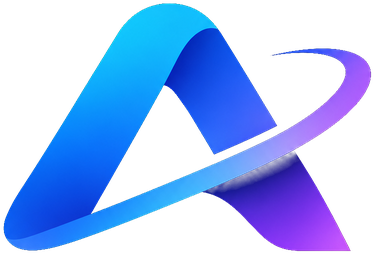

Eu pesquiso na internet, respondo com as fontes e aprendo com cada conversa. Se eu errar, me ensine: o que você diz vale mais que qualquer site.
Coloque a AVIX na tela inicial para abrir como um app, até sem internet.
Tudo o que a AVIX aprendeu fica salvo só neste celular. Faça um backup para não perder nada ou para passar para outro aparelho.
Wikipédia em português, com a em inglês como reserva, e respostas rápidas do DuckDuckGo. Todas gratuitas e sem cadastro.
Apaga tudo o que foi aprendido neste aparelho.
AVIX IA · versão 1.2 · funciona sem IA externa